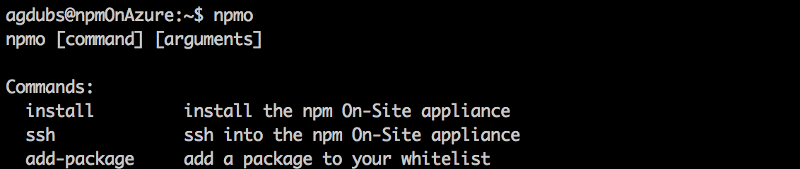

Using Microsoft Azure
Summary
To get npm Enterprise up and running on Microsoft Azure, you first need:
- An npm user account
- An npm Enterprise license. Get a free trial here!
- A Microsoft account and an Azure account
...then we'll need to:
- Set up and deploy an Ubuntu 14.04 LTS VM
- Run the npmO deploy script
- Set up endpoints for the admin panel, registry, and website
Let's get started!
Step 1: Get a VM Up and Running
The first step is to get a VM running. Follow this tutorial for getting an Ubuntu 14.04 LTS VM running.
While setting this up, make sure to:
- Pick a size that has at least 7 GB of RAM. We strongly recommend 14 GB.
- Take note of the name of the Security Group you assign. We'll need to edit it in Step 3.
Feel free to make any other configurations you wish. Once you are set, deploy your VM and move on to Step 2!
Step 2: Install npm Enterprise
Now that you have a VM deployed, let's install the npm Enterprise (npmo) tool.
- SSH into your VM
curl https://raw.githubusercontent.com/ashleygwilliams/npmo-deploy/master/deploy.sh | shLet it run! It can take a minute or two, depending on the specs of your VM.
This script:
- updates
apt-get - installs
curlviaapt-get - installs Node.js, via [NodeSource]
- updates npm
- displays Node.js and npm versions
- installs
npmoglobally as the root user, via npm
- updates
To confirm that it worked, type
npmo. If the install succeeded you should see thenpmo helpscreen, which looks like this:
Step 3: Set up Endpoints
There are now 4 web services running on 4 ports on your VM. In order to access these outside of the VM, we'll need to create rules to allow them to be accessed. The ports we need to configure are:
| Service | Port |
|---|---|
| Administrator Panel | 8800 |
| Registry | 8080 |
| Website | 8081 |
| Authentication Endpoints | 8082 |